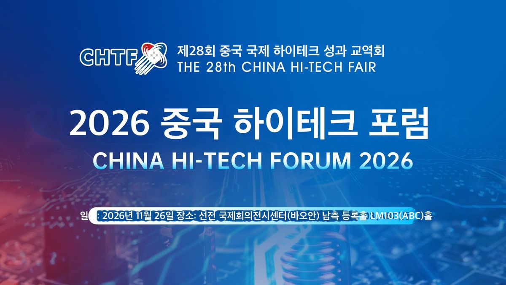
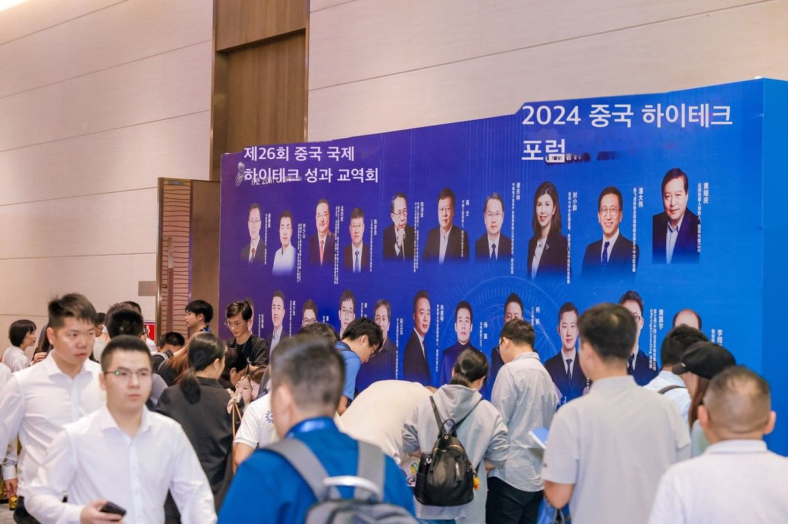
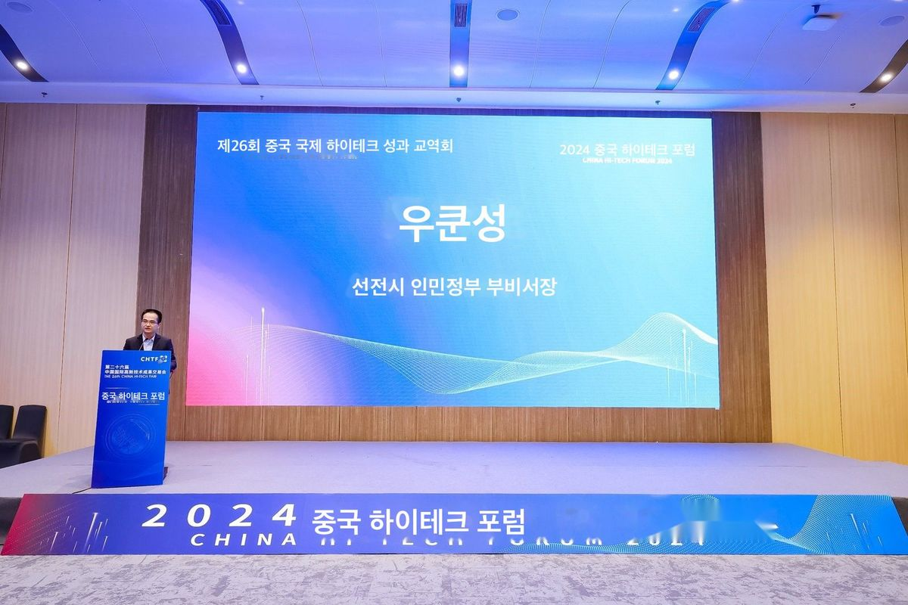
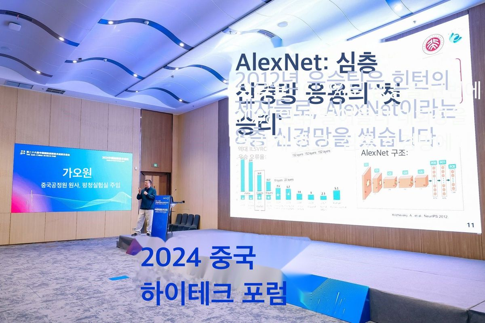
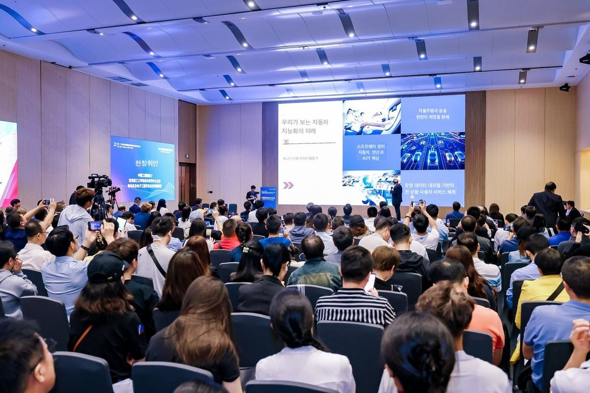
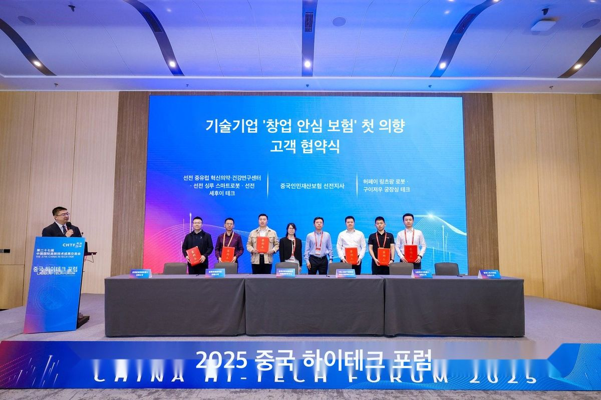
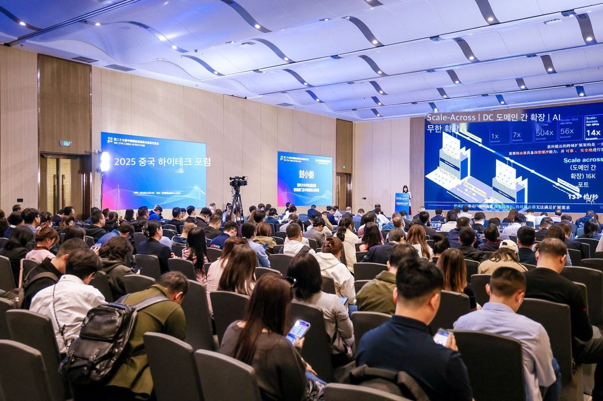
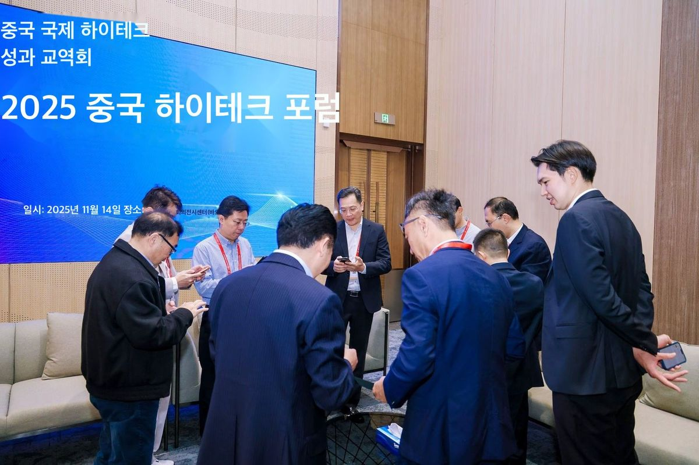

중국 하이테크 포럼
제28회 중국 국제 하이테크 성과 교역회
일시: 2026년 11월 26일 09:00~17:30
장소: 선전 국제회의전시센터(바오안)
주제: AI가 이끄는 미래 산업, 기술 돌파에서 현장 적용까지

1. 포럼 소개
중국 국제 하이테크 성과 교역회(고교회)는 1999년 시작해 27회를 치르며 중국 첨단기술 분야의 대외 개방 창구이자 혁신 성과 사업화의 국가급 플랫폼이 됐습니다. 제28회는 선전시 인민정부 주최로 2026년 11월 26~28일 선전 국제회의전시센터(바오안)에서 열리며, 19개 전문 전시구역에서 AI·로봇 산업체인, 저고도 경제, 에너지저장·배터리, 컴퓨팅·전력, 반도체·집적회로, 신에너지, 항공우주 등을 다룹니다.
2026년 전국 양회는 AI와 체화지능을 중점 방향으로 꼽았고, 정부 업무보고는 체화지능, 양자기술, 6G 등 미래산업 육성과 'AI+' 심화, 에이전트·스마트 단말의 대규모 보급을 제시했습니다. 지금 AI는 지각·가상 지능에서 감지·판단·실행이 가능한 실체 지능으로 나아가고 있습니다. 대모델, 물리 AI, 시뮬레이션 학습(Sim2Real), 핵심 부품 국산화가 함께 돌파구를 만들면서 휴머노이드, 4족 로봇, 지능형 이동 조작 플랫폼이 실험실을 벗어나 산업, 상업, 요양, 문화관광, 특수작업 현장으로 빠르게 옮겨 가고 있습니다.
중국 하이테크 포럼은 노벨상·튜링상 수상자, 국내외 원사, 정부·기업 고위 인사가 모여 온 고위급 플랫폼입니다. 이번 포럼은 2026년 11월 26일 열리며, AI 에이전트와 체화지능의 대규모 적용 흐름에 맞춰 대모델, 물리 AI, 로봇, 반도체, 신에너지, 저고도 경제를 다룹니다. 모든 세션에 로봇 산업 의제를 담아 기술 개발, 공급망, 현장 응용, 자본까지 잇는 AI·로봇 융합 행사로 꾸밉니다.
2. 포럼 일시
2026년 11월 26일 09:00~17:30
3. 포럼 장소
선전 국제회의전시센터(바오안) 남측 등록홀 LM103(ABC)
4. 포럼 주제
AI가 이끄는 미래 산업, 기술 돌파에서 현장 적용까지
5. 조직 기구
고교회 주최:
선전시 인민정부
포럼 주최:
고교회 조직위원회 사무국
중관춘 산업금융 협력·전환 촉진회
포럼 주관:
베이징 진커구 테크
6. 포럼 개요
| 날짜 | 날짜 | 행사명 | 장소 |
| 11월 26일 오전 | 09:00-12:00 | 중국 하이테크 포럼 개막식: AI가 이끄는 미래 산업, 기술 돌파에서 현장 적용까지 | 선전 국제회의전시센터(바오안) 남측 등록홀 LM103(ABC) |
| 11월 26일 오후 | 13:30-14:00 | AI 로봇 기술혁신·응용 서밋: 혁신 성과 발표 | |
| 14:00-16:30 | AI 로봇 기술혁신·응용 서밋 기조연설: 체화지능과 기계의 새 생태계, 기술 혁신과 다양한 산업 현장 적용 | ||
| 16:30-17:30 | AI 로봇 기술혁신·응용 서밋 대담: 자본과 산업의 융합, 로봇 분야 투자 논리 |
7. 포럼 일정
| 제28회 중국 국제 하이테크 성과 교역회 중국 하이테크 포럼 · AI 로봇 기술혁신·응용 서밋. 일시: 2026년 11월 26일 09:00~17:30, 장소: 선전 국제회의전시센터(바오안) |
| 09:00~12:00 개막식: AI가 이끄는 미래 산업, 기술 돌파에서 현장 적용까지 |
| 세계 과학기술 혁신이 활발해지면서 AI, 대모델, 체화지능, 휴머노이드 같은 첨단기술이 신질 생산력을 키우고 세계 산업 구도를 바꾸는 핵심 동력이 되고 있습니다. 중국은 미래산업 육성을 중시해 체화지능과 AI를 전략에 포함하고 기술 혁신과 실물경제의 결합을 추진합니다. '중국 과학기술 제1전' 고교회는 이번 포럼에서 AI가 이끄는 미래 산업을 주제로 정부, 산업, 학계, 연구, 수요 기업의 역량을 모아 흐름을 진단하고 성과를 나누며 협력을 잇습니다. 'AI+' 추진과 물리 AI·체화지능의 발전으로 AI는 감지·판단·실행이 가능한 실체 지능 단계로 들어섰고, 로봇 산업은 도약의 기회를 맞고 있습니다. [AI가 다시 짜는 세계 경제: '도구'에서 '노동력'으로] AI의 역할 변화와 생산력 진화 경로를 분석하고, 세계 제조업의 지능화와 산업용·협동로봇 확산이 공급망에 주는 변화와 기회를 살핍니다. [2026 첨단기술 전망: 물리 AI 돌파와 자기진화 로봇] 올해의 대표 물리 AI 연구 성과와 로봇 자율 운동 제어, 동적 적응 알고리즘, 경량 신소재, 유연한 생체모방 관절을 소개하고, 로봇의 자율 학습·자기 개선 전망을 짚습니다. [물리 AI·에이전트·로봇 산업 협력] AI가 가상에서 실제 물리 세계로 나아가는 변화를 기술 구조와 산업 가치 측면에서 분석합니다. 휴머노이드, 범용 로봇, 특수 로봇을 중심으로 물리 AI가 환경 인식·역학 계산·공간 적응 능력을 어떻게 높이는지, 에이전트가 단일 상호작용에서 전 공정 자율 작업과 다기기 협업으로 어떻게 발전하는지, 대모델·멀티모달 기술과 로봇의 융합 경로를 다루고, 범용·특수·서비스 로봇의 중장기 발전 방향을 제시합니다. [반도체·집적회로: 로봇 산업의 기반] 고정밀 작업과 지능형 운전을 뒷받침하는 칩, 센서, 컨트롤러, 전력소자를 다룹니다. 반도체 소재, IC 설계, 첨단 패키징, 전용 연산 칩의 과제와 돌파 방향을 정리하고, 자립적인 반도체 생태계와 핵심 부품 국산화로 '칩-부품-완제품' 산업체인을 잇는 방안을 찾습니다. [녹색 저탄소·신에너지·저고도와 로봇의 융합] 탄소중립 목표 아래 신에너지, 에너지저장, 수소, 저고도 경제와 로봇의 결합을 살핍니다. 이동로봇·야외 작업 로봇의 동력 시스템과 작업 효율, 순찰·물류·보안 분야의 저고도 장비와 공중 작업 로봇 응용, 국산 AI·로봇의 해외 시장 진출 방안을 나눕니다. |
| 고교회 2026 중국 하이테크 포럼 · 11월 26일 오후 13:30~17:30 AI 로봇 기술혁신·응용 서밋 |
| 13:30~14:00 혁신 성과 발표 |
| 신제품·신기술 발표: 로봇 산업체인 기업의 최신 완제품, 핵심 부품, 알고리즘 시스템 (기업당 10~15분). 대표 사례 공유: 산업·서비스·특수 로봇의 우수 적용 사례와 현장 적응·운영 최적화 경험 (기업당 10~15분). 첨단기술 시연: 뇌-컴퓨터 인터페이스로 제어하는 외골격, 나노로봇 표적 약물 전달, 감성 상호작용 가정용 반려 로봇 등 현장 데모. 프로젝트 협약식: 로봇 산업체인 협력, 공동 기술 개발, 현장 적용, 투자·융자 프로젝트 합동 협약. |
| 14:00~16:30 기조연설: 체화지능과 기계의 새 생태계, 기술 혁신과 다양한 산업 현장 적용 |
| AI는 '지각 지능'에서 '체화지능'으로 빠르게 옮겨 가고 있으며, 휴머노이드, 4족 로봇, 지능형 이동 조작 플랫폼은 기술 돌파와 상용화의 중요한 시기에 들어섰습니다. 대모델, 핵심 부품 국산화, 시뮬레이션 학습(Sim2Real)의 성숙으로 로봇이 실험실에서 산업, 상업, 문화관광, 요양, 특수작업 현장으로 나아가고 있습니다. 체화지능은 로봇에 물리 환경을 감지·이해·적응하는 능력을, 대모델은 강력한 학습·추론 능력을 줍니다. 다만 알고리즘 최적화, 데이터 보안, 현장 적응 같은 과제가 남아 있습니다. 주요 주제: [체화지능: 물리적 경계를 넘어 산업 현장으로] 휴머노이드, 생체모방·협동로봇의 첨단 제조, 의료 재활, 공공 안전, 가정 서비스, 상업 유통 분야 대규모 적용과 시제품 양산의 핵심 난제, 비즈니스 모델과 산업 생태계. [전 과정 기술 돌파: 감지-판단-실행 일체형 폐루프] 복잡한 실제 환경의 동적 감지, 지능형 판단, 정밀 물리 실행과 공학화 경험. [핵심 부품 돌파: 로봇 산업의 기반 다지기] 정밀 전동장치, 서보, 고해상도 센서, 생체모방 로봇 손, 지능형 로봇팔, 고성능 액추에이터의 국산화 현황과 과제, 공급망 협력. [대모델·에이전트: 로봇의 범용 두뇌] 멀티모달 대모델, 강화학습, 적응형 학습으로 환경 인식, 자율 판단, 자연스러운 상호작용 능력을 높이는 방안. [범용 체화지능을 향해: 멀티모달 감지와 유연 조작] 머신비전, 다중 감각 융합, 유연 운동 제어, 정교 조작의 최신 성과와 기술 로드맵. |
| 16:30~17:30 대담: 자본과 산업의 융합, 로봇 분야 투자 논리 |
| 체화지능 로봇은 '기술 돌파-자본 유입-현장 적용'이 맞물려 상승하는 시기에 들어섰습니다. 대모델의 멀티모달 능력이 '두뇌' 병목을 풀고, 휴머노이드 하드웨어 원가 하락이 '몸'을 가능하게 하며, 생성형 AI가 산업체인 협력에 새로운 변수를 더합니다. 자본이 기술 이상과 사업 현실의 균형을 어떻게 잡을지가 핵심 과제입니다. [장기 가치 판단] AI 발전, 하드웨어 원가 하락, 응용 확대의 세 측면에서 휴머노이드·체화지능의 장기 논리와 양산·시장 폭발 시점을 전망합니다. [생성형 AI가 다시 짜는 산업체인] 로봇 연구개발, 생산, 운영, 서비스의 변화와 새로운 협력 방식을 살핍니다. [밸류에이션과 위험 관리] 투자자 시각에서 평가 체계, 세부 분야 우선순위, 기술·상용화·시장 경쟁 위험과 대응 전략을 분석합니다. [산업과 투자의 협력] 기술 발전 속도, 현장 적용, 정책 방향을 고려한 중장기 투자 전략과 산업체인 배치, 산업계와 자본의 결합 모델을 나눕니다. |
8. 지난 포럼 현장 스케치








9. 회의 문의
중국 하이테크 포럼 사무국 문의
담당자: 쑹 선생님
휴대전화: 139 1165 2979
제28회 고교회 조직위원회 회의·행사팀
담당자: 왕 선생님
휴대전화: 186 0051 1517
이메일: wangyifei@zhenweiexpo.com
담당자: 옌 선생님
휴대전화: 181 4852 9480
이메일: 3239950742@qq.com